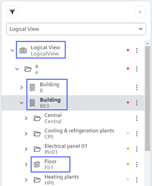

Configure Plant Overview for Flex Client
Scenario
The Plant Overview displays in Flex Client under the following conditions:
- The object is a Campus, Building, or Floor (see the following image)
- The system found at least one plant beneath the selected node
The objects are configured by default to Order, so attributes must be reassigned to them.


The higher levels for each floor or building must be modified with attributes to view them.
The appropriate attributes must also be assigned to any user view where applicable.
Prerequisites
- In System Browser, select Logical View.
Overview
1 | Modify Logical View |